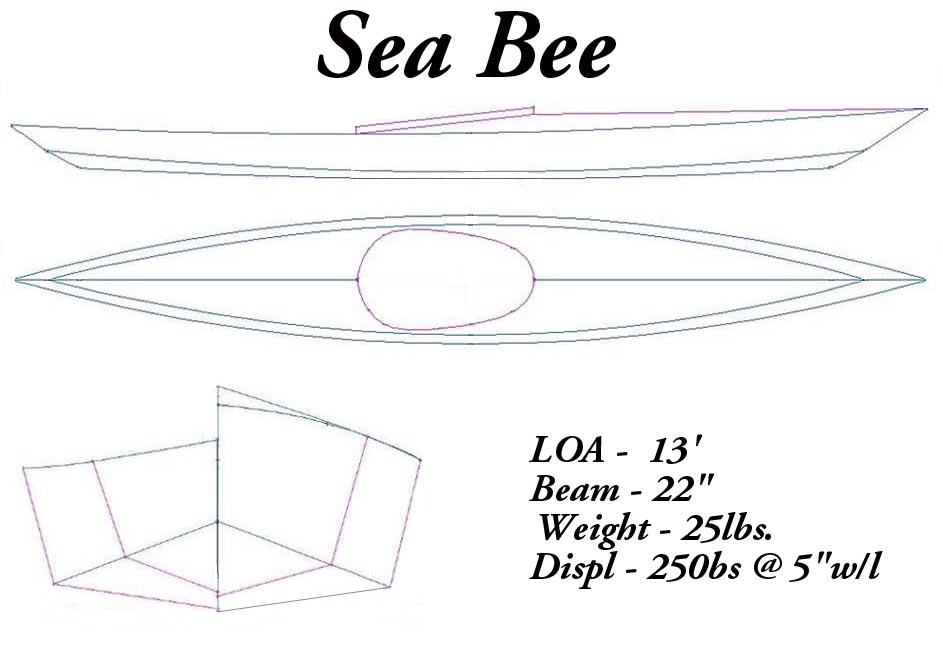

| Menu Last Page Next Page | |
|
 This is a drawing of the boat used to create the wood frame construction manual. Originally designed as a single-chine, the Sea Bee has been modified to become a multi-chine kayak. Drawing and offsets of this new version appear on the next two pages. Offsets for the original single-chine Sea Bee are not available. |
|